G L A N U M
El yacimiento arqueológico de Glanum
se localiza en la ciudad de Saint-Remy-de-Provence. Antiguo oppidum
Celta de los Saluvios, que se desarrollo alrededor del manantial.
Las excavaciones comenzaron en 1921.
El yacimiento más importante de la Galia narbonesa
Los primeros pobladores se establecieron en los siglos VII y VI a.e.c., resguardados por una muralla de piedra en seco que cierra la vía de las Alpillas a lo largo de 300m. Los objetos de cerámica y las monedas arrojadas como ofrenda a la sima que domina el manantial son el testimonio de la consideración religiosa que tuvo, desde sus orígenes, este asentamiento galo. El dios celta, Glan, y sus compañeras benéficas, las Madres glánicas, habitaban estas aguas consideradas curativas y dieron su nombre a los habitantes.
Las relaciones con el mundo griego les proporcionaron una gran prosperidad en los siglos Il y I a.e.c. por la amplitud de la zona habitada y la construcción de edificios de tipo helenístico. La Glanon griega se expandió más allá de la muralla del oppidum con la construcción de nuevos edificios de tipo griego, como casas y un bouleuterion. Pero el ejemplo más notable sigue siendo, sin duda, la construcción de un centro monumental de tipo griego.
Después de la conquista de la Galia
por Julio César en el 49 a.e-c., Glanum se transformó en un oppidum
latinum. Los gánicos adquirieron la "ley latina": fueron elegidos para
las magistraturas municipales y algunos pudieron acceder a la ciudadanía
romana. La ciudad continuó expandiéndose hacia el norte.
Un arco triunfal en la intersección de la Via Domitia marca su entrada.
Junto a él, se erigió un mausoleo en memoria de los Iulii, miembros de
la élite indígena, honrados con este apellido por los servicios
prestados en particular durante las Guerras de las Galias.
Con el emperador Augusto, la ciudad adquirió prestigiosas instalaciones
urbanas, incluidos templos gemelos que servían al culto imperial. El urbanismo se transformó rápidamente.
Los edificios civiles y religiosos de Glanon fueron desmantelados en
favor de viviendas, luego la construcción del centro monumental romano:
foro, basílica, curia. Se construyeron baños termales y una fuente
triunfal, alimentada por una presa construida al sur del sitio en el
corazón del macizo. Más tarde, en los primeros años del
reinado de Augusto, pasó a ser una colonia latina, Glanum.
Pero la ciudad no resistió a las invasiones germanas, alrededor del año 270, la ciudad fue destruida y abandonada gradualmente tras las primeras oleadas de invasiones germánicas y sus habitantes huyeron a una cercana aglomeración urbana que, en la época merovingia, se convertirá en propiedad de la abadía Saint-Remi de Reims.
Poco a poco, Glanum se hunde en el
olvido......., Glanum terminó completamente enterrado bajo una gruesa
capa de aluvión, casi 8m de altura. Solo el arco y el mausoleo, a la
entrada de la ciudad, permanecen permanentemente visibles.
En el momento de su "redescubrimiento", el sitio estaba cubierto por un
campo de olivos y una granja provenzal se alzaba sobre el sitio del
Foro.
Antes de la visita, disfrutamos del museo y tomamos algo en el bar. También hay máquina con bebidas.
Visitemos el yacimiento
En la entrada nos encontramos con Les
Antiques, un conjunto monumental compuesto por un arco del triunfo y un
mausoleo.
El Arco data del año 20, y en él se muestran relieves de la Galia
vencida, con representaciones de hombres y mujeres celtas encadenados, o
un personaje galo-romano, togado romana y una túnica gala, que muestra
al público a un guerrero galo encadenado. La ornamentación está también
de símbolos de la abundancia.
El Mausoleo data de los años 30-20 a.e-c. Se encuentra en un
excelente estado de conservación. Fue erigido por los tres hijos de un
ciudadano romano llamado Julius. En su honor y de su padre. El
estatus de ciudadano romano le fue otorgado al abuelo por los servicios
prestados en el ejército durante la Guerra de las Galias. El monumento
consta de tres partes diferenciadas: un soporte rectangular, sobre el
que se asienta un arco del triunfo y sobre éste un pequeño templo que
alojaría las estatuas de los dos miembros homenajeados de esta familia
galo-romana.
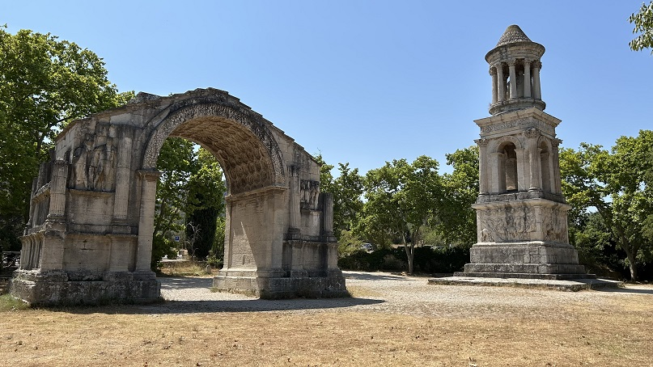
Destaca el
barrio residencial.
La Calle principal de la ciudad en gran parte de su recorrido, bajo de
ella, discurre el alcantarillado de la ciudad.
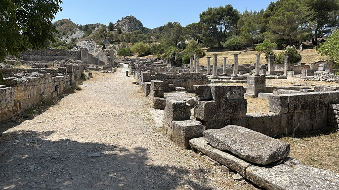
El Mercado está constituido por cuatro tiendas alrededor de un patio
rodeado de columnas dóricas. Cuenta con una gran entrada, flanqueada a
un lado por un espacio de culto sagrado, sacellum y al otro por una
enorme tienda con un pozo. Otras cuatro tiendas ocupan el fondo
del patio, que está rodeado por un
pórtico dórico. En la época romana, se convirtió una parte del mercado
en santuario de Bona Dea, diosa oracular que atendía a las oraciones. El
altar votivo está dedicado "al oído" de la diosa, cuyas orejas aparecen
representadas en una corona vegetal.
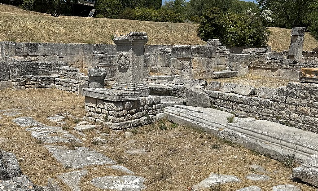
La Casa de las Antae reúne las características de las viviendas mediterráneas típicas, con sus estancias distribuidas en torno a un patio con estanque. Debe su nombre a dos pilastras coronadas por capiteles corintios, denominadas antae o antas. Es una casa helenística mediterránea típica. En la época romana hubo una estancia a la que se le dio más importancia mediante dos antae, pilastras angulares adosadas a las esquinas de las paredes, decoradas con capiteles corintios.
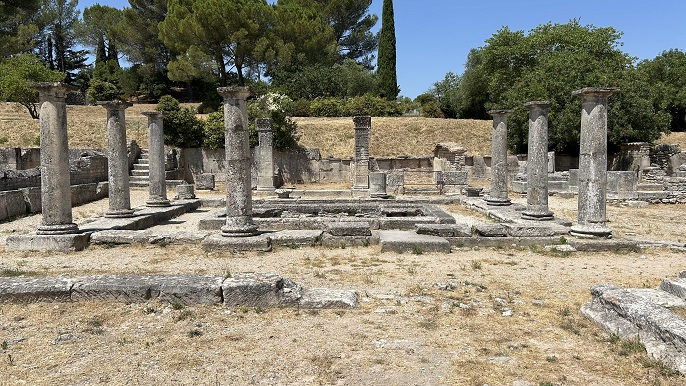
Las Termas se construyeron a partir del año 75 a.e.c., según un esquema clásico. En las cercanías se encuentran dos casas, una con peristilo helenístico, a la derecha, y la otra, que da a la calle, antaño decorada con un mosaico que representa un capricornio.
|
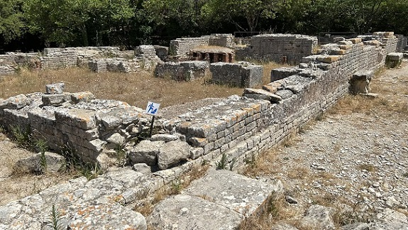 |
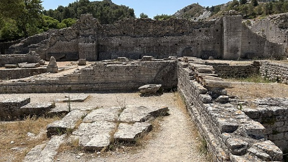 |
La Casa de Atis, edificada en el siglo II a.e.c., fue ocupada durante cerca de cinco siglos. Esta casa mantuvo sus paredes exteriores durante varios siglos, pero su organización interior fue modificada en diversas ocasiones. Por ejemplo, en el periodo romano se añadió una cocina y un pozo con brocal. Estas reformas y la calidad de los umbrales son testimonio de la riqueza de esta casa. Al parecer, en la época romana fue el lugar de residencia de los sacerdotes del culto de Atis, joven pastor de Frigia castrado por Cibeles. En el hotel de Sade se conserva un bajorrelieve de mármol descubierto aquí.
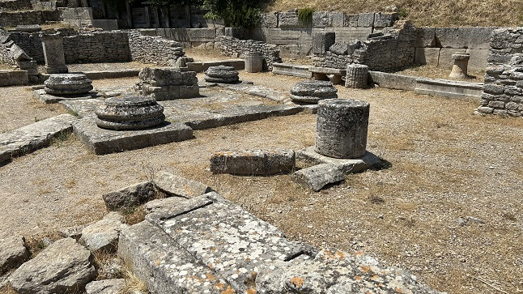
Las Tiendas
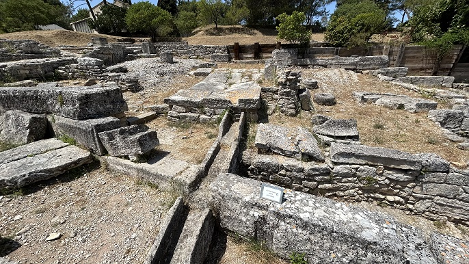
Continuamos hacia el centro monumental
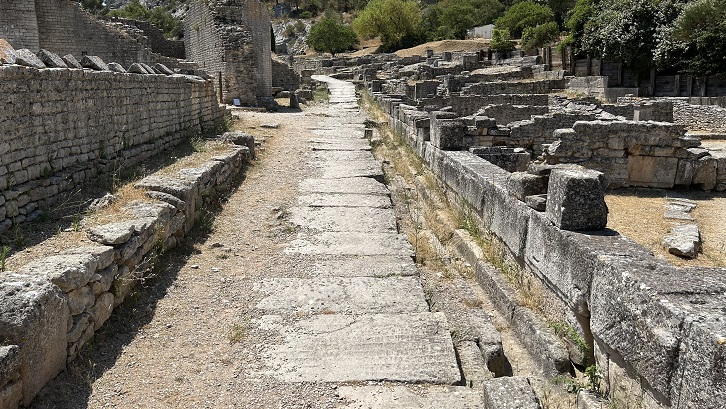
El Foro, la plaza pública romana, estaba cerrada por dos pórticos. La Curia es una estancia reconocible por su ábside, en la que se
reunían los cargos electos locales en la época romana; otra sala servía
de tribunal.
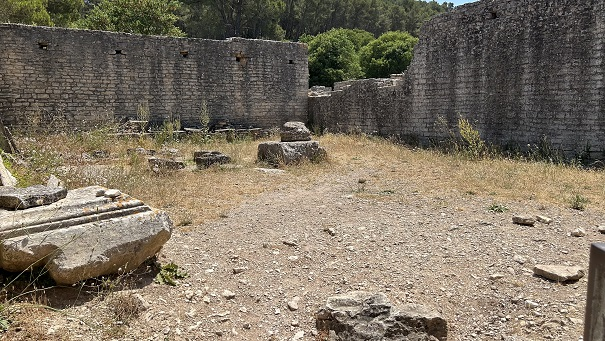
El Templo Toscano es de época helenística.

El Pozo de Dromos debe su nombre al corredor, o dromos, acondicionado en una escalera de acceso al agua.
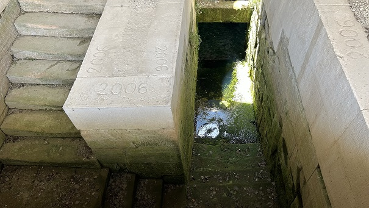
La Casa de Sulla, dividida en dos por la basílica, debe su nombre a
la inscripción que figura en el
mosaico que decoraba un salón. Esta casa se encontraba situada en un
antiguo barrio de viviendas helenístico y fue soterrada en la época
romana al construirse la basílica. Gracias a eso, la decoración
pictórica y los mosaicos han podido conservarse. La casa debe su nombre
a una inscripción en teselas verdes incrustada en el mosaico de motivos
geométricos negros y blancos que hoy está desmontado pero que antes
decoraba el salón.
En el mosaico ponía CO SVLLAE, seguramente el nombre del
propietario.
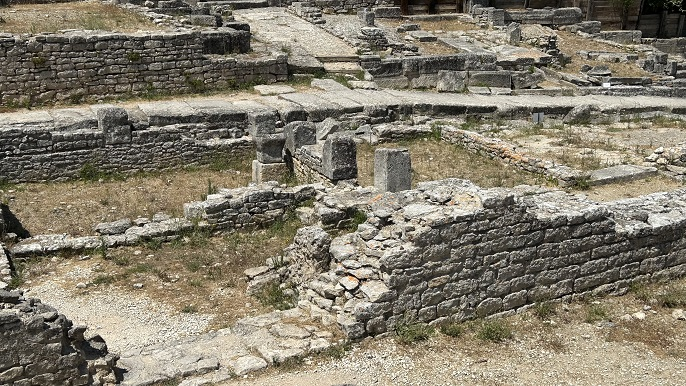
La Basílica es un amplio edificio administrativo del que subsisten 24 pilares de cimentación cuadrados. La Casa de las Alcobas: para distinguir sus vestigios, imbricados en las pilas de la basílica, la planta está marcada con bandas blancas en el suelo del foro.
|
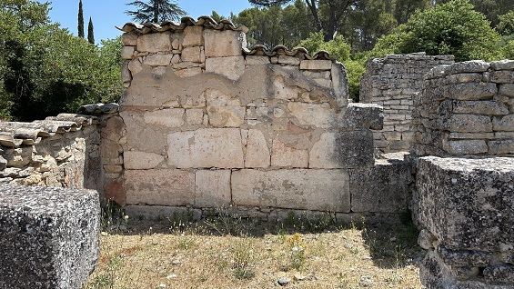 |
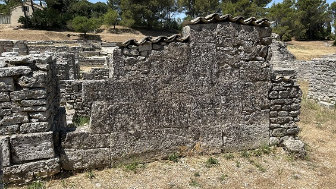 |
La Fuente Triunfal, La pileta
rectangular está adosada a un ábside semicircular sobre el que hay
un
nicho en el que se hallaba situada una estatua, hoy desaparecida con
esculturas
cargadas de un valor simbólico claramente triunfal: prisioneros galos
hincando la
rodilla y trofeos. La fuente se alimentaba a través de una
tubería de
plomo que sin duda tomaba el agua de uno de los depósitos de captación
alimentados por el acueducto de Peirou.
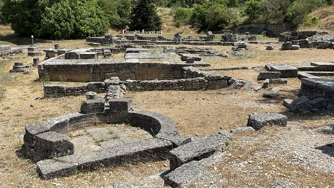
La Exedra, especie de refuerzo con asientos, fue construida en el siglo II a.e.c. y conservada en la época romana.
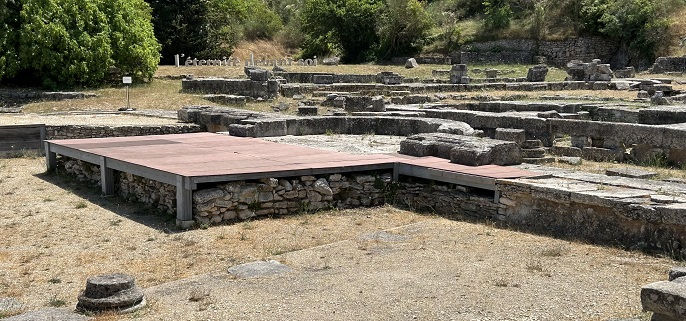
El Pórtico dórico, situado en la entrada del santuario, probablemente servía para las abluciones purificadoras de los fieles que acudían al manantial.
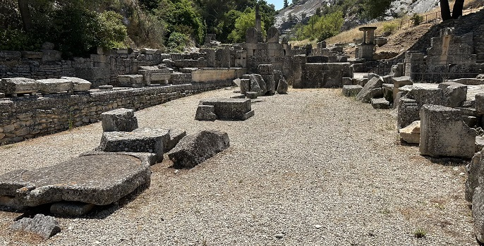
Los Templos Geminados estaban dedicados al culto de la familia imperial. El más pequeño ha sido objeto de una rehabilitación parcial.
|
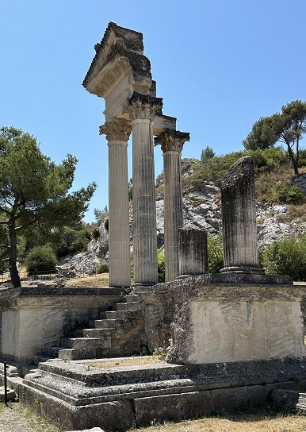 |
Se edificaron dos templos arquitectónicamente
idénticos pero de tamaño diferente en honor a la familia
imperial. Los realzaba un períbolo, un gran pórtico en forma de
U. Los capiteles, los bloques de cornisa, las acróteras ... que
se encontraron in situ sirvieron de modelo en 1992 para la
reconstrucción de una esquina del templo más pequeño.
Del templo grande quedan los cimientos y
bloques del derrumbe. Al
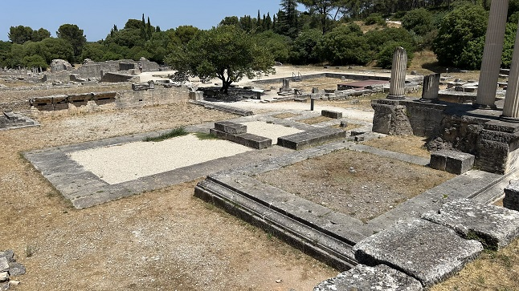 |
El Bouleterión era la sala de reuniones de los notables en la época helenística. Estaba formado por gradas en tres de sus lados y originariamente tenía un altar central.
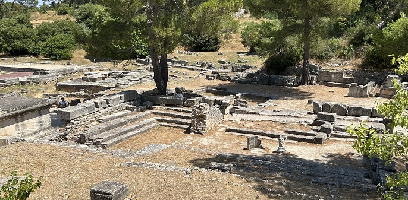
La muralla y la continuación del centro monumental. La Muralla, sus muros defensivos son de aparejo
grande y se apoyan en muros del recinto protohistórico. En el centro,
una puerta para carretas y una puerta peatonal flanqueada por una torre
permitían el acceso al santuario. En la época romana, esta puerta se
transformó en la entrada principal.
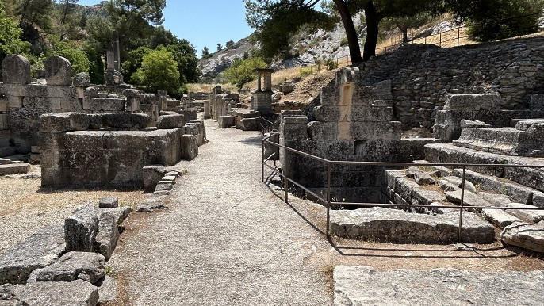
La Muralla galoromana

El barrio del manantial sagrado. La Escalera de los Saluvios, bordeada por terrazas habitadas, comunicaba el manantial con el santuario rupestre.
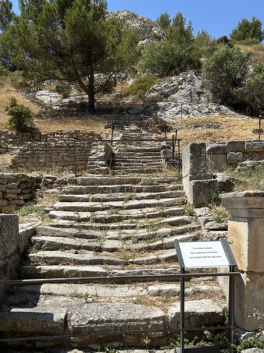
La Fuente Sagrada fue monumentalizada en el
siglo II a.e.c.; una escalera de piedra desciende hacia el estanque
alimentado por una galería de captación. Los saluvios le atribuían
virtudes terapéuticas. El culto al dios Glan en torno a estas aguas
favorece el desarrollo de la zona y contribuye a la fortuna del
emplazamiento. La fuente no era al principio más que una sencilla pileta
excavada en la roca que quedó cubierta en el s. Il a.e.c. por un
edificio. Tiene un aparejo grande, opus spicatum, característico de la
época. En la época romana se añaden a ambos lados
de la fuente el santuario de Hércules y el templo de Valetudo.
El santuario de Hércules está dedicado al semidios de la
mitología grecolatina, símbolo de la fuerza física. En este santuario se
encontraron numerosos altares votivos.
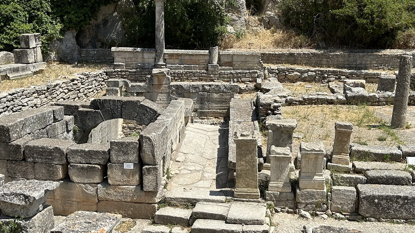
El Templo de Valetudo es un pequeño templo corintio ofrecido a la
diosa romana de la salud, Valetudo.
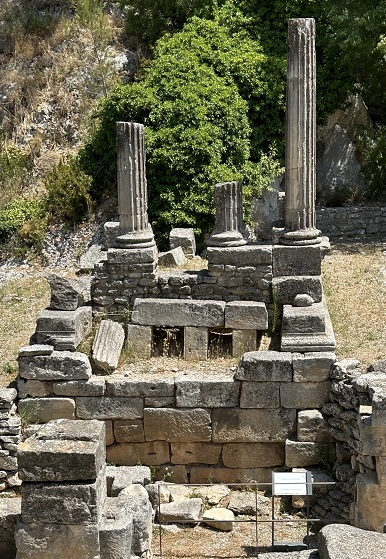
El barrio autóctono. Los Ahumaderos de Vino, de la época romana, se utilizaban para ahumar el vino y, de este modo, conservarlo mejor.
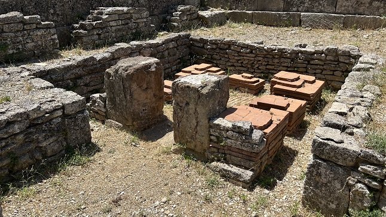
Las Casas Atóctonas forman parte del pueblo galo que precedió a la monumentalización de la ciudad.
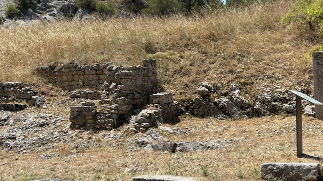
A partir del siglo XVI, las ruinas de las Antiques se convirtieron en
motivo de visita para eruditos y viajeros. Este conjunto monumental,
constituido por el arco de triunfo y el mausoleo, era el único vestigio
visible de la ciudad de Glanum. En los siglos XVII y XVIII, los
descubrimientos de objetos antiguos se multiplicaron en sus
inmediaciones. En 1921 el lugar se convirtió en objeto de excavaciones
sistemáticas.
Más información y visitas: Descubrir | Sitio arqueológico de Glanum
| FRANCIA ROMANA | MENÚ | IMPERIO ROMANO |